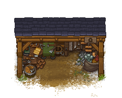

Undertaker's workplace
| This article is a stub. You can help Graveyard Keeper Wiki by expanding it. |
| Undertaker's workplace | |
|---|---|
 | |
Basic information
| |
Related pages :
|
Undertaker |
Building Information
| |
Rotatable :
|
False |
Location(s)
| |
| Refugee camp | |

The Undertaker's workplace is part of the Game of Crone DLC. It can be unlocked by the Undertaker questline and built at the Refugee camp. It's not a workstation, so no crafting is available here after completion.
Cost
| Icon | Materials Required | Note |
|---|---|---|
| 10× Wooden plank |
Builds instantly |